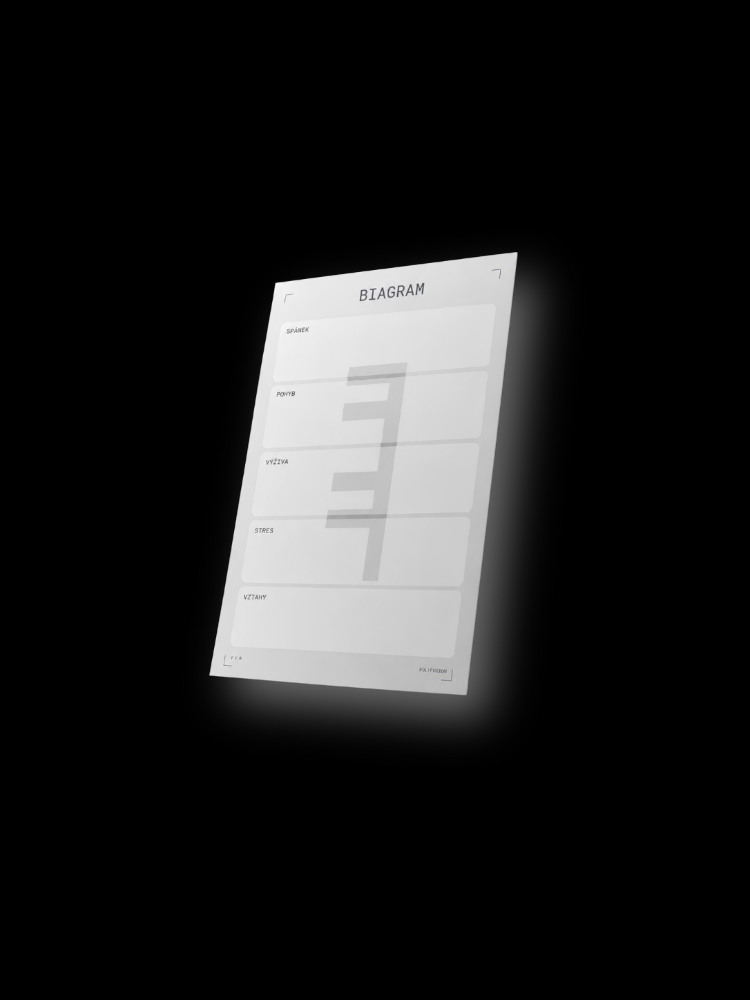

BIAGRAM je personalizovaný protokol pro optimalizaci těla a mysli, postavený na individuálních datech a životní situaci klienta.
Cílem je udělat systematickou, na míru šitou optimalizaci dostupnou i mimo drahou a roztříštěnou soukromou péči.
BIAGRAM cílí na funkční optimum — úroveň těla a mysli, kterou člověk skutečně využije ve své práci, rodině a v prostředí, ve kterém žije.
Vychází z principu, který Miyamoto Musashi formuloval pro bojové umění — nedělat nic, co nemá využití — aplikovaného na oblast fyzické a mentální optimalizace.
(Absolutnímu potenciálu bez ohledu na využití se věnuje samostatný projekt: HUMAN APEX, který zatím z bezpečnostních důvodů není zveřejněn ani plně definován)
BIAGRAM vychází z Functional Medicine Matrix, oficiálně používaného rámce funkční medicíny, a staví na čtyřech provázaných vrstvách.
Vstupní anamnéza zjišťuje osobní a zdravotní historii klienta — co jeho stavu předcházelo, co ho spustilo a co ho aktuálně udržuje. Sama nic nemění, ale určuje, který zásah bude u konkrétního člověka fungovat: dva lidé se stejně špatným spánkem mohou potřebovat úplně jiný přístup, pokud jeden prochází rozvodem a nepravidelnými směnami a druhý má celoživotní návyk na kofein pozdě večer.
Na ni navazuje jediná vrstva, kterou BIAGRAM přímo mění — spánek, pohyb, výživa, stres a vztahy.
Výsledek se měří v sedmi fyziologických systémech: asimilaci, obraně a opravě, energii, mitigaci a clearance, transportu, komunikaci a strukturální integritě.
Zdravé fungování těchto systémů má i druhý důsledek: tělo pak nestojí v cestě práci s myslí a uvědoměním.
Kompletní seznam studií →Projekt je ve vývoji.
„Dosažení určité úrovně v těchto sedmi systémech mi odemyká potenciál pracovat s vlastní myslí — tělo přestává bránit čistotě myšlení a otevírá prostor sebeuvědomění a sebereflexi, které vedou k hlubšímu poznání vlastní podstaty. To je pro mě absolutní vrchol, ke kterému by měl směřovat každý člověk. Taková proměna totiž neposouvá jen kvalitu prožívání na zcela jinou úroveň, ale přispívá i k obecnému dobru — za většinu problémů světa totiž podle mě může lidské ego — nenasytná potřeba mysli ovládat a definovat se skrze vnější svět, čímž člověka vzdaluje od jeho pravé podstaty.“
Nechte nám e-mail a jako první se dozvíte, až bude BIAGRAM připravený.